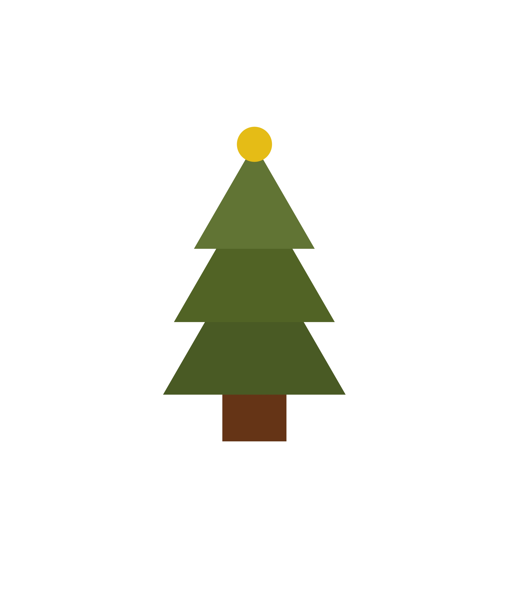
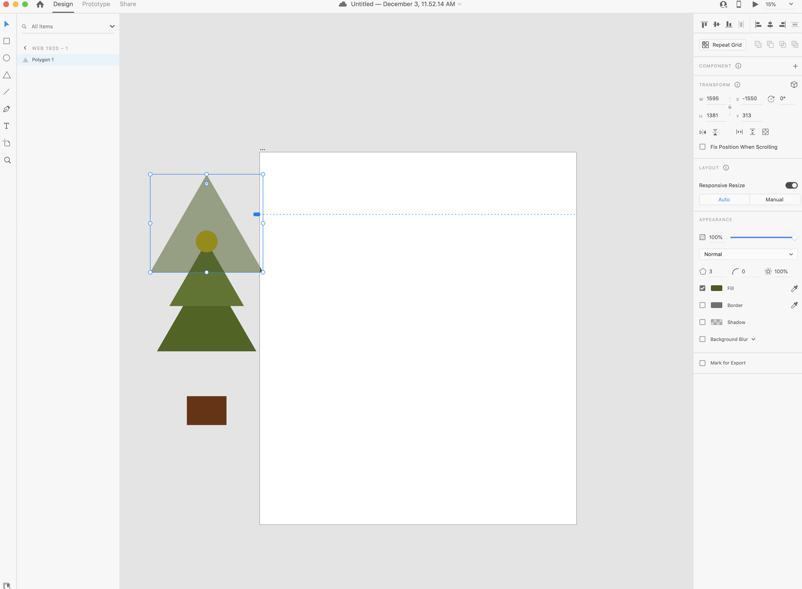

1. Open XD
2. Select Custom Size/Artboard
3. Select the artboard tool (second to last) from the tool bar on the left, and create a 4472 Width x 5258 Hight artboard
4. Place the artboard at x: -2974 and y: -1753
5. Select the square-shape tool on the left handside
6. In that art board, create a brown (#653416), 560 width x 408 height recatangle shape, with no border
7. Place the rectangle at x: -1032 and y: 1694
8. Next, select the triangle-shape tool from the left
9. Create an olive green (#4A5A24), 1595 width x 1381 height triangle shape, with no border
10. Place the triangle at x: -1550 and y: 313
11. Select the triangle-shape tool from the left again
12. Create another lighter olive green (#516425), that is 1405 width x 1216 height triangle, with no border
13. Place that triangle at x: -1455 and y: -156
14. Create another lighter olive green (#617434), that is 1055 width x 913 height triangle, with no border
15. Place that triangle at x: -1280 and y: -493
16. Lastly, select the circle-shape tool on the left
17. Create a yellow circle (#E5BB15), 307 width x 307 height, with no border
18. Place the circle at x: -905 and y: -646
19. Select the 3 lines at the top left, click export, select All Artboards and export your file as a JPG
20. Email your results to ndo21@masonlive.gmu.edu
 